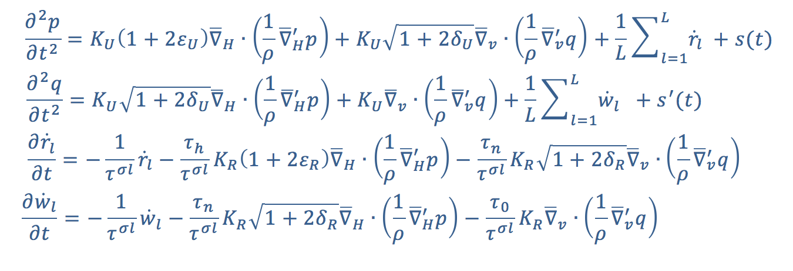

Nuno V. da Silva
Computational Scientist &
Geophysicist
PhD Imperial College
Lic. Universidade de Lisboa
Scientific computing
Finite difference method, Finite element method, optimisation
Geophysics
Geophysical modelling and inversion
Seismic Inversion
Electromagnetic Inversion
Visco-Acoustic/Elastic wave modelling
Electromagnetic modelling
Programming
Python, C, C++, Fortran (all flavours)
MPI, openMP
shell scripting
PBS, SLURM
Publications
Random topics:
Some notes on computing
An interesting article on the past, present and future of programming languages